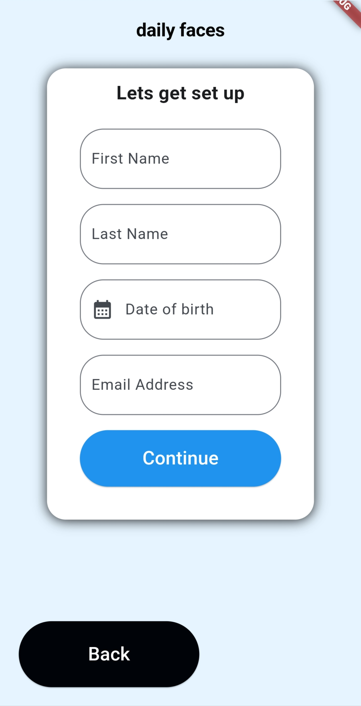

Daily Faces - coming to play store
Description
I am currently developing an app in Flutter that is designed to help elderly people experiencing memory loss improve their cognitive function. This has been a valuable learning experience in itself, as it involved working with a business partner and research professionals from Ryan Healthcare who are interested in improving the quality of life for their residents.
Technologies Used
- Flutter
- Dart
Fetures
- Fire base data base
- camera and gallery functions